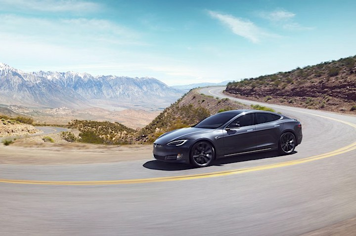

ილონ მასკმა ტესლას პირველი ელექტროპიკაპი წარადგინა

ილონ მასკმა დღეს ტესლას პირველი ელექტროპიკაპი წარადგინა. პიკაპი სახელად Cybertruck 2021 წლის მეორე ნახევრიდან გაიყიდება და მისი ფასი 39 900 დოლარიდან დაიწყება, თუმცა, მისი წინასწარი შეკვეთა უკვე შესაძლებელია... მეტი
Tesla-მ შედარებით დაბალფასიანი მოდელები გამოუშვა
Tesla-მ მოდელების Model X და Model S იაფიანი ვერსიები გამოუშვა. ახალ ვერსიებს 75 კვტ-იანის ნაცვლად, 100 კვტ-იანი ბატარეები აქვთ. Mashable-ის ცნობით, Model S-ის შეძენა, 498 კილომეტრიანი უზრუნველყოფით, ახლა $85.000-დ არის შესაძლებელი. Model X-ის ყიდვა, რომელსაც ერთ დამუხტვაზე 434 კმ-ის გარბენა შეუძლია, 88.000 დოლარად შეგიძლიათ. თუმცა 100კვტ-იანი მოდელების შეძენა კვლავაც იქნება შესაძლებელი. უბრალოდ, მას გაუმჯობესებული მონაცემები და 8.000 დოლარით მეტი ეღირება. ცვლილებაა დასახელებაშიც – ამ მოდელებს სახელწოდებაში Extended Range დაემატება... მეტი
ილონ მასკის თქმით, Starlink-ის თანამგზავრული ინტერნეტი 2020 წელს ამოქმედდება

ილონ მასკის ტვიტში ვკითხულობთ, რომ SpaceX-ის პროექტი – Starlink, რომელიც გლობალური, თანამგზავრული ინტერნეტის უზრუნველყოფას ისახავს მიზნად, მიმდინარე წელს ამოქმედდება. უფრო კონკრეტულად, შიდა ტესტირება 3 თვეში დაიწყება, ხოლო დედამიწის მოსახლეობა მის გამოცდას, დაახლოებით, 6 თვეში შეძლებს. ცნობილია, რომ პირველ ეტაპზე ჩრდილოეთ განედი იქნება უზრუნველყოფილი, რადგან ეს დედამიწის ის ნაწილია, სადაც სოფლებში სათანადო ინფრასტრუქტურა არ არსებობს და ინტერნეტის მიწოდების არატრადიციული – თანამგზავრული გზების გამოყენებაა საჭირო... მეტი